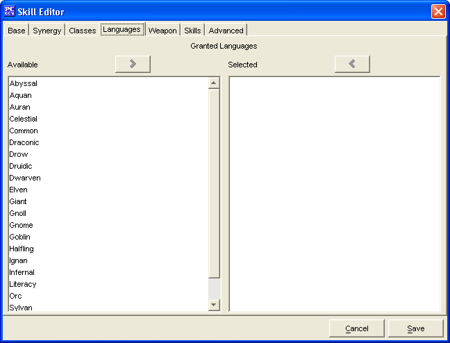

The Languages Tab is used to add a Granted Languages for the Skill being created.
The two Granted Languages windows, Available and Selected are used to create a list of Bonus Languages.
The Cancel and Save buttons, which appear on every tab, are used to either cancel the Skill creation or save it to the customSkills.lst file.